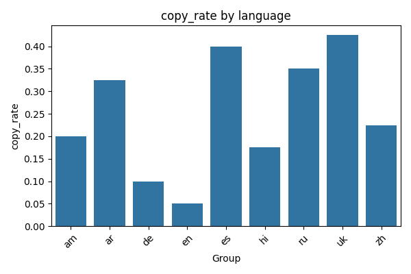
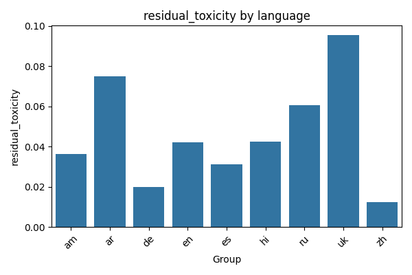
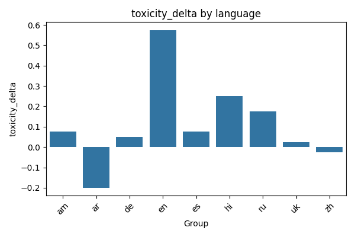
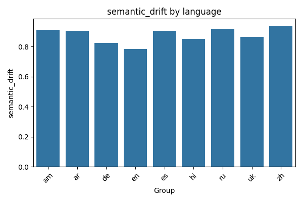

Detox Evaluation Report
Global metrics
| Metric | Value |
|---|
| copy_rate | 0.2500 |
| bertscore_f1 | 0.8546 |
| sbert_similarity | 0.7572 |
| bleu | 48.3270 |
| chrf | 72.2326 |
| length_ratio | 1.3572 |
| residual_toxicity | 0.0462 |
| toxicity_delta | 0.1111 |
| semantic_drift | 0.8782 |
Metrics by language
| Group | copy_rate | bertscore_f1 | sbert_similarity | bleu | chrf | length_ratio | residual_toxicity | toxicity_delta | semantic_drift |
|---|
| am | 0.2000 | 0.9682 | 0.8292 | 19.4453 | 31.4794 | 1.3888 | 0.0365 | 0.0750 | 0.9110 |
| ar | 0.3250 | 0.8661 | 0.8004 | 81.5168 | 87.6135 | 1.6444 | 0.0748 | -0.2000 | 0.9049 |
| de | 0.1000 | 0.8437 | 0.7600 | 82.4237 | 90.5065 | 1.3314 | 0.0200 | 0.0500 | 0.8240 |
| en | 0.0500 | 0.8191 | 0.6699 | 14.5358 | 27.8434 | 1.1714 | 0.0421 | 0.5750 | 0.7834 |
| es | 0.4000 | 0.8338 | 0.7630 | 17.2860 | 34.4450 | 1.4021 | 0.0313 | 0.0750 | 0.9063 |
| hi | 0.1750 | 0.8329 | 0.7100 | 9.9801 | 27.1305 | 1.1078 | 0.0424 | 0.2500 | 0.8533 |
| ru | 0.3500 | 0.8395 | 0.7757 | 48.3270 | 72.2326 | 1.1795 | 0.0605 | 0.1750 | 0.9186 |
| uk | 0.4250 | 0.8547 | 0.7917 | 56.8110 | 68.3875 | 1.9890 | 0.0954 | 0.0250 | 0.8638 |
| zh | 0.2250 | 0.8330 | 0.7147 | 0.0000 | 80.2549 | 1.0000 | 0.0125 | -0.0250 | 0.9383 |
Global Visualizations
Copy rate distribution

Length ratio distribution

Semantic similarity vs residual toxicity

Visualizations by language
copy_rate by language

residual_toxicity by language

toxicity_delta by language

semantic_drift by language
